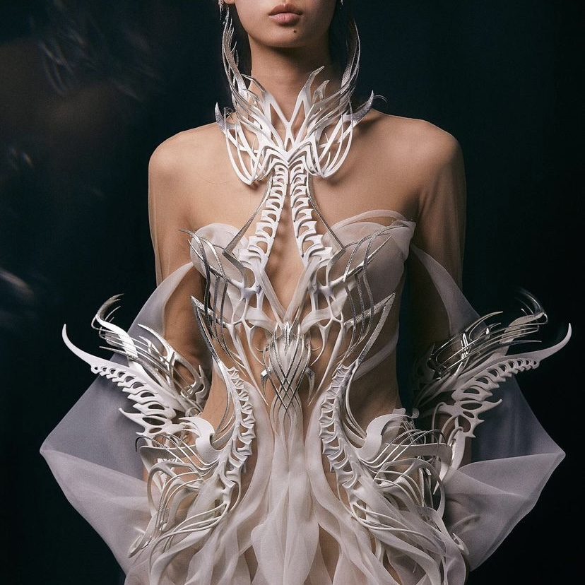
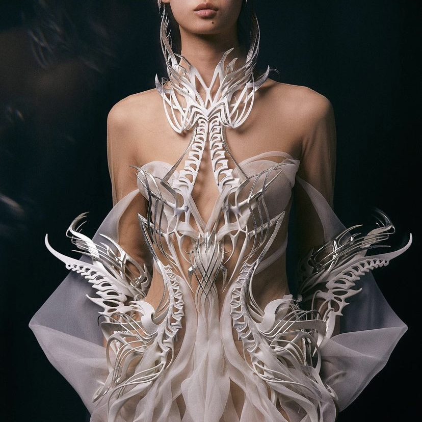

I created a stand for my Roland SP-404SX sampler to enhance the ergonomics of playing and give it a more alien cellular chrome aesthetic. It's intended to serve as functional synth jewelry, inspired by the styles of Nusi Quero and Iris Van Herpen.

 


I had planned to design the stand to stretch the full length of the 404 like other products I'd seen online, but I realized after measuring the 404 that full side pieces would be too big to print on the Ender 3 Pro bed (even diagonally), so I decided instead to utilize the holes along the back and make the stand half the length of the 404 by engaging with the middle holes on each side.
I started in Grasshopper by constructing 2D surfaces of the side and back panels, then extruding those into 3D solid breps to be baked themselves or used as bounding boxes for the voronoi mesh operations (as per comments in the GH file). I explain the script in the video and briefly outline it below.
For the side panel, I created a base rectangle with the length of the 404 (255mm) and a height of 70mm, another rectangle at an angle used to slice the base rectangle into a triangle, another rectangle at a y-offset used to slice the base rectangle at the middle 404 hole point, a slot that the back panel's teeth press-fit into, and a peg that fits into the middle 404 hole.

For the back panel, I created a base rectangle with the height of the side panel (70mm) and a width of the space between the side panels (132mm), and teeth to press-fit into the slot on each side panel.
I then built a chain of voronoi mesh operations that take a 2D surface, 3D brep, and extrusion depth as inputs, as well as adjustable parameters for the number of cells, random seed, and thickness between cells. It creates a voronoi cell polyline pattern within the boundary of the 3D brep, then uses the Weaverbird plugin to create a mesh from those polylines and thicken it to the extrusion depth.
For the side panel, I fed the first shape into the voronoi mesh operation chain, adjusted the parameters until I liked the look of it, baked it, then repeated the process for the second shape. In Rhino, I joined those meshes into one, then exported it as an STL.
For the back panel, I fed the first shape into the voronoi mesh operation chain, adjusted the parameters until I liked the look of it, baked it, then baked the second shape at their 3D solid form. In Rhino, I joined those meshes into one, then exported it as an STL.
Mirroring the side panel over the x-axis, I previewed how the panels would fit together.
When test printing the silver PLA, I found that it printed best with a nozzle temp of 205, print speed of 45 mm/s, and raft adhesion, so I sliced with those settings in Cura. I also used 10% concentric infill at low quality to decrease print time as much as possible. I was initially nervous about some of the thin/spotty mesh around the side panel slots in Cura because it wasn't apparent in the Rhino models, but I found that if the teeth and slots were the same height and width, the press fit was tight enough to offer stability regardless of the slot perimeter not forming a full enclosure.
I did various test prints when I was still building out the GH script and deciding on the panel structures, tolerances for the press-fit, and voronoi parameters, so there's a bit of a silver plastic graveyard in my apartment and the total print time took many days of trial and error. However, if I was just to print the final pieces, it'd take ~11 hrs. The final side panels took ~3.5 hrs each and back panel took ~4 hrs.
To assemble the stand, I simply snapped the panels together and aligned the 404's middle holes with the pegs on each side.
I investigated a bunch of voronoi and weaverbird tutorials and forums, and I honestly don't remember where I got the inspiration for what I landed on, but it was likely a patchwork synthesis of all the things that made sense to me, so here are some tabs I had open that probably had something to do with it:
Also, as always, big hug for the Discord bbs. I didn't end up needing to act on the question I asked there, but Junchao and Andy stay coming through with helpful ideas and solutions, and it's much appreciated!